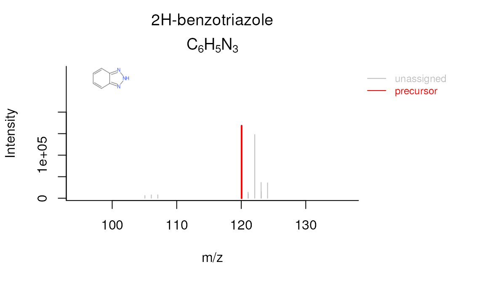

Introduction
In this tutorial you will learn how to perform a simple non-target analysis with patRoon. This tutorial is not meant to give a detailed overview of patRoon. Instead, it serves as a quick introduction on how to use patRoon to setup and perform a full non-target analysis workflow.
The workflow in this tutorial consists of the following steps:
Data
In this tutorial we will use example data provided within the patRoonData package. Please make sure this package is installed (see the Handbook for brief installation instructions). The example dataset contains LC-MS data for a standard mixture with known composition (‘standard-X’) and a blank solvent (‘solvent-X’), both in triplicate and measured with positive and negative ionization. While this may not seem like the most exciting data, it does allow to demonstrate the most important functionality of patRoon.
The provided analyses already have been exported to an open format (.mzML) and are ready to use. For your own data it may be necessary to first export your data to mzXML or mzML and perform other data pre-treatment steps such as mass re-calibration. This can be done using the tools from ProteoWizard or software from your mass spectrometer vendor. Alternatively, patRoon can do this automatically for your analyses with the convertMSFiles() function. Please see the handbook and reference manual for its usage.
New project
Whenever you start a new non-target analysis it is highly recommended to start this from a fresh project directory. This directory will contain your R processing script(s) and any other output generated during the workflow. Note that this directory does not have to contain the raw MS data files. In fact, keeping these files separate may be handy, for instance, if you want to run multiple non-target analyses on these files or store the analysis files on a shared location.
Starting a new project typically consists of
- Creating a new directory (unsurprisingly!)
- Changing the active working directory to the project directory (e.g. with
setwd()). - Create (or copy) an
Rprocessing script.
Note that step 2 is important as any output files (e.g. reports and cached results) are stored to the current working directory by default. Consequently, always take care to ensure that this directory is active, for instance, after restarting R.
Steps 1-3 can be easily performed with the newProject() function. Alternatively, you can of course also perform these steps yourself. Both approaches will be discussed in the next sections.
Automatic project creation
Ensure that RStudio is active and start the new project utility:
patRoon::newProject()NOTE Currently
newProject()only works when using RStudio.
A dialog should pop-up (see screenshot below) where you can specify where and how the new project will be generated, which analyses you want to include and define a basic workflow. Based on this input a new project with a template script will be automatically generated.

For this tutorial make the following selections
- Destination tab Select your desired location of the new project. Leave other settings as they are.
- Analyses tab Here you normally select your analyses. However, for this tutorial simply select the Example data option.
- Data pre-treatment tab Since the example data is already ready to use you can simply skip this tab.
- Features tab Leave the default OpenMS algorithm for feature finding and grouping.
- Annotation tab Select GenForm, MetFrag and mzR for the formula generation, compound identification and peak list generator options, respectively (note that the last will become visible when selecting either of the other options).
- TP screening tab No need to do anything here for this tutorial.
- Reporting tab Make sure to enable HTML reporting.
Manual project creation
For RStudio users it is easiest to simply create a new RStudio project (e.g. File –> New Project). This will create a new directory and ensure that the working directory is set whenever you re-open it. Alternatively, you can do this manually, for instance:
projDir <- "~/myProjectDir"
dir.create(projDir)
setwd(projDir)The next step is to create a new R script. For this tutorial simply copy the script that is shown in the next section to a new .R file.
Template R script
After you ran newProject() the file below will be created. Before running this script, however, we still have to add and modify some of its code. In the next sections you will learn more about each part of the script, make the necessary changes and run its code.
# Script automatically generated on Mon Jul 26 14:32:58 2021
library(patRoon)
# -------------------------
# initialization
# -------------------------
workPath <- "C:/myproject"
setwd(workPath)
# Example data from patRoonData package (triplicate solvent blank + triplicate standard)
anaInfo <- patRoonData::exampleAnalysisInfo("positive")
# -------------------------
# features
# -------------------------
# Find all features
# NOTE: see the reference manual for many more options
fList <- findFeatures(anaInfo, "openms", noiseThrInt = 1000, chromSNR = 3, chromFWHM = 5, minFWHM = 1, maxFWHM = 30)
# Group and align features between analyses
fGroups <- groupFeatures(fList, "openms", rtalign = TRUE)
# Basic rule based filtering
fGroups <- filter(fGroups, preAbsMinIntensity = 100, absMinIntensity = 10000, relMinReplicateAbundance = 1,
maxReplicateIntRSD = 0.75, blankThreshold = 5, removeBlanks = TRUE,
retentionRange = NULL, mzRange = NULL)
# -------------------------
# annotation
# -------------------------
# Retrieve MS peak lists
avgMSListParams <- getDefAvgPListParams(clusterMzWindow = 0.005)
mslists <- generateMSPeakLists(fGroups, "mzr", maxMSRtWindow = 5, precursorMzWindow = 4,
avgFeatParams = avgMSListParams,
avgFGroupParams = avgMSListParams)
# Rule based filtering of MS peak lists. You may want to tweak this. See the manual for more information.
mslists <- filter(mslists, absMSIntThr = NULL, absMSMSIntThr = NULL, relMSIntThr = NULL, relMSMSIntThr = 0.05,
topMSPeaks = NULL, topMSMSPeaks = 25)
# Calculate formula candidates
formulas <- generateFormulas(fGroups, mslists, "genform", relMzDev = 5, adduct = "[M+H]+", elements = "CHNOP",
oc = FALSE, calculateFeatures = TRUE,
featThresholdAnn = 0.75)
# Calculate compound structure candidates
compounds <- generateCompounds(fGroups, mslists, "metfrag", dbRelMzDev = 5, fragRelMzDev = 5, fragAbsMzDev = 0.002,
adduct = "[M+H]+", database = "pubchem",
maxCandidatesToStop = 2500)
compounds <- addFormulaScoring(compounds, formulas, updateScore = TRUE)
# -------------------------
# reporting
# -------------------------
reportCSV(fGroups, path = "report", formulas = formulas, compounds = compounds, MSPeakLists = mslists,
components = NULL)
reportHTML(fGroups, path = "report", formulas = formulas, compounds = compounds, MSPeakLists = mslists,
components = NULL, reportPlots = c("chord", "venn", "upset", "eics", "formulas"),
selfContained = FALSE, openReport = TRUE)Workflow
Now that you have generated a new project with a template script it is time to make some minor modifications and run it afterwards. In the next sections each major part of the script (initialization, finding and grouping features, annotation and reporting) will be discussed separately. Each section will briefly discuss the code, what needs to be modified and finally you will run the code. In addition, several functions will be demonstrated that you can use to inspect generated data.
Initialization
The first part of the script loads patRoon, makes sure the current working directory is set correctly and loads information about the analyses. This part in your script looks more or less like this:
library(patRoon)
workPath <- "C:/my_project"
setwd(workPath)
# Example data from patRoonData package (triplicate solvent blank + triplicate standard)
anaInfo <- patRoonData::exampleAnalysisInfo("positive")After you ran this part the analysis information should be stored in the anaInfo variable. This information is important as it will be required for subsequent steps in the workflow. Lets peek at its contents:
anaInfo#> path analysis group blank
#> 1 /usr/local/lib/R/site-library/patRoonData/extdata/pos solvent-pos-1 solvent-pos solvent-pos
#> 2 /usr/local/lib/R/site-library/patRoonData/extdata/pos solvent-pos-2 solvent-pos solvent-pos
#> 3 /usr/local/lib/R/site-library/patRoonData/extdata/pos solvent-pos-3 solvent-pos solvent-pos
#> 4 /usr/local/lib/R/site-library/patRoonData/extdata/pos standard-pos-1 standard-pos solvent-pos
#> 5 /usr/local/lib/R/site-library/patRoonData/extdata/pos standard-pos-2 standard-pos solvent-pos
#> 6 /usr/local/lib/R/site-library/patRoonData/extdata/pos standard-pos-3 standard-pos solvent-posAs you can see the generated data.frame consists of four columns:
- path: the directory path of the file containing the analysis data
- analysis: the name of the analysis. This should be the file name without file extension.
- group: to which replicate group the analysis belongs. All analysis which are replicates of each other get the same name.
- blank: which replicate group should be used for blank subtraction.
The latter two columns are especially important for data cleanup, which will be discussed later. For now keep in mind that the analyses for the solvents and standards each belong to a different replicate group ("solvent" and "standard") and that the solvents should be used for blank subtraction.
In this tutorial the analysis information was just copied directly from patRoonData. The generateAnalysisInfo() function can be used to generate such a table for your own sample analyses. This function scans a given directory for MS data files and automatically fills in the path and analysis columns from this information. In addition, you can pass replicate group and blank information to this function. Example:
generateAnalysisInfo(patRoonData::exampleDataPath(), groups = c(rep("solvent-pos", 3), rep("standard-pos", 3)),
blanks = "solvent")#> path analysis group blank
#> 1 /usr/local/lib/R/site-library/patRoonData/extdata/pos solvent-pos-1 solvent-pos solvent
#> 2 /usr/local/lib/R/site-library/patRoonData/extdata/pos solvent-pos-2 solvent-pos solvent
#> 3 /usr/local/lib/R/site-library/patRoonData/extdata/pos solvent-pos-3 solvent-pos solvent
#> 4 /usr/local/lib/R/site-library/patRoonData/extdata/pos standard-pos-1 standard-pos solvent
#> 5 /usr/local/lib/R/site-library/patRoonData/extdata/pos standard-pos-2 standard-pos solvent
#> 6 /usr/local/lib/R/site-library/patRoonData/extdata/pos standard-pos-3 standard-pos solventNOTE Of course nothing stops you from creating a
data.framewith analysis information manually withinRor load the information from a csv file. In fact, when you create a new project withnewProject()you can select to generate a separate csv file with analysis information (i.e. by filling in the right information in the analysis tab).
NOTE The blanks for the solvent analyses are set to themselves. This will remove any features from the solvents later in the workflow, which is generally fine as we are usually not interested in the blanks anyway.
Find and group features
The first step of a LC-MS non-target analysis workflow is typically the extraction of so called ‘features’. While sometimes slightly different definitions are used, a feature can be seen as a single peak within an extracted ion chromatogram. For a complex sample it is not uncommon that hundreds to thousands of features can extracted. Because these large numbers this process is typically automatized nowadays.
To obtain all the features within your dataset the findFeatures function is used. This function requires data on the analysis information (anaInfo variable created earlier) and the desired algorithm that should be used. On top of that there are many more options that can significantly influence the feature finding process, hence, it is important to evaluate results afterwards.
In this tutorial we will use the OpenMS software to find features and stick with default parameters:
fList <- findFeatures(anaInfo, "openms", noiseThrInt = 1000, chromSNR = 3, chromFWHM = 5, minFWHM = 1, maxFWHM = 30)#> Finding features with OpenMS for 6 analyses ...
#> ================================================================================
#> Loading peak intensities for 'solvent-pos-1'...
#> Loading peak intensities for 'solvent-pos-2'...
#> Loading peak intensities for 'solvent-pos-3'...
#> Loading peak intensities for 'standard-pos-1'...
#> Loading peak intensities for 'standard-pos-2'...
#> Loading peak intensities for 'standard-pos-3'...
#> Done!
#> Feature statistics:
#> solvent-pos-1: 3747 (15.4%)
#> solvent-pos-2: 3700 (15.2%)
#> solvent-pos-3: 3804 (15.7%)
#> standard-pos-1: 4349 (17.9%)
#> standard-pos-2: 4469 (18.4%)
#> standard-pos-3: 4203 (17.3%)
#> Total: 24272After some processing time (especially for larger datasets), the next step is to group features. During this step, features from different analysis are grouped, optionally after alignment of their retention times. This grouping is necessary because it is common that instrumental errors will result in (slight) variations in both retention time and m/z values which may complicate comparison of features between analyses. The resulting groups are referred to as feature groups and are crucial input for subsequent workflow steps.
To group features the groupFeatures() function is used, which has similar argument requirements as findFeatures() and likewise has many more options to tune the process.
fGroups <- groupFeatures(fList, "openms", rtalign = TRUE)#> Grouping features with OpenMS...
#> ===========
#> Importing consensus XML...Done!
#>
#> ===========
#> Done!Data clean-up
The next step is to perform some basic rule based filtering with the filter() function. As its name suggests this function has several ways to filter data. It is a so called generic function and methods exists for various data types, such as the feature groups object that was made in the previous section (stored in the the fGroups variable). Note that in this tutorial the absMinIntensity was increased to 1E5 to simplify the results.
fGroups <- filter(fGroups, preAbsMinIntensity = 100, absMinIntensity = 1E5,
relMinReplicateAbundance = 1, maxReplicateIntRSD = 0.75,
blankThreshold = 5, removeBlanks = TRUE,
retentionRange = NULL, mzRange = NULL)#> Applying intensity filter... Done! Filtered 0 (0.00%) features and 0 (0.00%) feature groups. Remaining: 24272 features in 7242 groups.
#> Applying replicate abundance filter... Done! Filtered 7970 (32.84%) features and 3798 (52.44%) feature groups. Remaining: 16302 features in 3444 groups.
#> Applying blank filter... Done! Filtered 13477 (82.67%) features and 2502 (72.65%) feature groups. Remaining: 2825 features in 942 groups.
#> Applying intensity filter... Done! Filtered 2439 (86.34%) features and 809 (85.88%) feature groups. Remaining: 386 features in 133 groups.
#> Applying replicate abundance filter... Done! Filtered 17 (4.40%) features and 10 (7.52%) feature groups. Remaining: 369 features in 123 groups.
#> Applying replicate group filter... Done! Filtered 0 (0.00%) features and 0 (0.00%) feature groups. Remaining: 369 features in 123 groups.The following filterings steps will be performed:
- Features are removed if their intensity is below a defined intensity threshold (set by
absMinIntensity). This filter is an effective way to not only remove ‘noisy’ data, but, for instance, can also be used to remove any low intensity features which likely miss MS/MS data. - If a feature is not ubiquitously present in (part of) replicate analyses it will be filtered out from that replicate group. This is controlled by setting
relMinReplicateAbundance. The value is relative, for instance, a value of0.5would mean that a feature needs to be present in half of the replicates. In this tutorial we use a value of1which means that a feature should be present in all replicate samples. This is a very effective filter in removing any outliers, for instance, caused by features which don’t actually represent a well defined chromatographic peak. - Similarly, features with within a replicate group are removed if the relative standard deviation (RSD) of their intensities exceeds that of the value set by the
maxReplicateIntRSDargument. - Features are filtered out that do not have a significantly higher intensity than the blank intensity. This is controlled by
blankThreshold: the given value of5means that the intensity of a feature needs to be at least five times higher compared to the (average) blank signal.
The removeBlanks argument tells will remove all blank analyses after filtering. The retentionRange and mzRange arguments are not used here, but could be used to filter out any features outside a give retention or m/z range. There are many more filters: see ?filter() for more information.
As you may have noticed quite a large part of the features are removed as a result of the filtering step. However, using the right settings is a very effective way to separate interesting data from the rest.
The next logical step in a non-target workflow is often to perform further prioritization of data. However, this will not be necessary in this tutorial as our samples are just known standard mixtures.
To simplify processing, we only continue with the first 25 feature groups:
fGroups <- fGroups[, 1:25]Inspecting results
In order to have a quick peek at the results we can use the default printing method:
fGroups#> A featureGroupsOpenMS object
#> Hierarchy:
#> featureGroups
#> |-- featureGroupsOpenMS
#> ---
#> Object size (indication): 52.1 kB
#> Algorithm: openms
#> Feature groups: M100_R28_65, M102_R7_95, M109_R192_158, M116_R316_230, M120_R268_286, M134_R301_479, ... (25 total)
#> Features: 75 (3.0 per group)
#> Analyses: standard-pos-1, standard-pos-2, standard-pos-3 (3 total)
#> Replicate groups: standard-pos (1 total)
#> Replicate groups used as blank: solvent-pos (1 total)Furthermore, the as.data.table() function can be used to have a look at generated feature groups and their intensities (i.e. peak heights) across all analyses:
head(as.data.table(fGroups))#> group ret mz standard-pos-1 standard-pos-2 standard-pos-3
#> 1: M100_R28_65 27.98733 100.1120 304644 275468 283104
#> 2: M102_R7_95 7.13423 102.1277 342224 320876 327020
#> 3: M109_R192_158 191.84678 109.0759 186612 187080 176756
#> 4: M116_R316_230 316.08673 116.0527 742572 772332 851204
#> 5: M120_R268_286 268.40343 120.0554 264836 245372 216560
#> 6: M134_R301_479 301.32917 134.0710 415648 348924 318340An overview of group properties is returned by the groupInfo() method:
#> rts mzs
#> M100_R28_65 27.98733 100.1120
#> M102_R7_95 7.13423 102.1277
#> M109_R192_158 191.84678 109.0759
#> M116_R316_230 316.08673 116.0527
#> M120_R268_286 268.40343 120.0554
#> M134_R301_479 301.32917 134.0710Finally, we can have a quick look at our data by plotting some nice extracted ion chromatograms (EICs) for all feature groups:
plotChroms(fGroups, colourBy = "fGroups", showFGroupRect = FALSE, showPeakArea = TRUE,
topMost = 1, showLegend = FALSE)Note that we only plot the most intense feature of a feature group here (as set by topMost=1). See the reference docs for many more parameters to these functions (e.g. ?plotChroms).
Annotation
MS peak lists
After obtaining a good dataset with features of interest we can start moving to find their chemical identity. Before doing so, however, the first step is to extract all relevant MS data that will be used for annotation. The tutorial data was obtained with data-dependent MS/MS, so in the ideal case we can obtain both MS and MS/MS data for each feature group.
The generateMSPeakLists() function will perform this action for us and will generate so called MS peak lists in the process. These lists are basically (averaged) spectra in a tabular form. We will use algorithms from the mzR package to do so:
avgPListParams <- getDefAvgPListParams(clusterMzWindow = 0.002)
mslists <- generateMSPeakLists(fGroups, "mzr", maxMSRtWindow = 5, precursorMzWindow = 4,
avgFeatParams = avgPListParams, avgFGroupParams = avgPListParams)#> Loading all MS peak lists for 25 feature groups in analysis 'standard-pos-1'...
#> ================================================================================
#> Loading all MS peak lists for 25 feature groups in analysis 'standard-pos-2'...
#> ================================================================================
#> Loading all MS peak lists for 25 feature groups in analysis 'standard-pos-3'...
#> ================================================================================
#> Generating averaged peak lists for all feature groups...
#> ================================================================================Note that we lowered the clusterMzWindow value to 0.002. This window is used during averaging to cluster similar m/z values together. In general the better the resolution of your MS instrument, the lower the value can be set.
Similar to feature groups the filter() generic function can be used to clean up the peak lists afterwards:
mslists <- filter(mslists, relMSMSIntThr = 0.02, topMSMSPeaks = 10)#> Filtering MS peak lists for 25 feature groups in analysis 'standard-pos-1'...
#> ================================================================================
#> Filtering MS peak lists for 25 feature groups in analysis 'standard-pos-2'...
#> ================================================================================
#> Filtering MS peak lists for 25 feature groups in analysis 'standard-pos-3'...
#> ================================================================================
#> Filtering averaged MS peak lists for 25 feature groups...
#> ================================================================================
#> Done! Filtered 1298 (15.51%) MS peaks. Remaining: 7070Here, all MS/MS mass peaks with intensities below 2% are removed and from the remaining peaks no more than the ten most intense are retained.
Formula calculation
Using the data from the MS peak lists generated during the previous step we can generate a list of formula candidates for each feature group which is based on measured m/z values, isotopic patterns and presence of MS/MS fragments. In this tutorial we will use this data as an extra hint to score candidate chemical structures generated during the next step. The command below will use GenForm to perform this step. Again running this code may take some time.
formulas <- generateFormulas(fGroups, mslists, "genform", relMzDev = 5, adduct = "[M+H]+", elements = "CHNOPSCl",
oc = FALSE, calculateFeatures = TRUE, featThresholdAnn = 0.75)#> Loading all formulas for analysis 'standard-pos-1'...
#> Converting to algorithm specific adducts... Done!
#> ================================================================================
#> Loaded 33 formulas for 23 features (92.00%).
#> Loading all formulas for analysis 'standard-pos-2'...
#> Converting to algorithm specific adducts... Done!
#> ================================================================================
#> Loaded 39 formulas for 23 features (92.00%).
#> Loading all formulas for analysis 'standard-pos-3'...
#> Converting to algorithm specific adducts... Done!
#> ================================================================================
#> Loaded 37 formulas for 23 features (92.00%).
#> Generating formula consensus...
#> ================================================================================Note that you need to change the elements parameter to this function to make sure that formulae with sulfur and chloride (S/Cl) are also accepted. It is highly recommended to limit the elements (by default it is just C, H, N, O and P) as this can significantly reduce processing time and improbable formula candidates. In this tutorial we already knew which compounds to expect so the choice was easy, but often a good guess can be made in advance.
NOTE The
generateFormulas()function returns an object that contains formula candidates assigned for each feature group. In the above call thecalculateFeaturesargument is set toTRUE: by doing so formulae are first calculated for individual features within a feature group. These results are then used to generate a consensus candidate formula list for the complete feature group. During this process any outliers (defined byfeatThresholdAnn) are automatically removed. In contrast, settingcalculateFeaturestoFALSEwill calculate formulae directly for feature groups (by using MS peak lists that have been averaged for the whole group). This will be significantly faster, but might produce (slightly) less accurate results.
Compound identification
Now it is time to actually see what compounds we may be dealing with. In this tutorial we will use MetFrag to come up with a list of possible candidates structures for each feature group. Before we can start you have to make sure that MetFrag and the PubChemLite library can be found by patRoon. Please see the Handbook for installation instructions.
Then generateCompounds() is used to execute MetFrag and generate the compounds.
compounds <- generateCompounds(fGroups, mslists, "metfrag", method = "CL",
dbRelMzDev = 5, fragRelMzDev = 5, fragAbsMzDev = 0.002,
adduct = "[M+H]+", database = "pubchemlite", maxCandidatesToStop = 2500)#> Identifying 25 feature groups with MetFrag...
#> Converting to algorithm specific adducts... Done!
#> ================================================================================
#> Loaded 654 compounds from 18 features (72.00%).While generateCompounds() is running a list of candidate compound structures will be downloaded for every feature group and ranked according to various scoring parameters.
See ?generateCompounds() for more information on possible databases and many other parameters that can be set.
NOTE This is often one of the most time consuming steps during the workflow. For this reason you should always take care to prioritize your data before running this function!
Finally we use the addFormulaScoring() function to improve ranking of candidates by incorporating the formula calculation data from the previous step.
compounds <- addFormulaScoring(compounds, formulas, updateScore = TRUE)#> Adding formula scoring...
#> ================================================================================Inspecting results
Similar as feature groups we can quickly peek at some results:
mslists#> A MSPeakLists object
#> Hierarchy:
#> workflowStep
#> |-- MSPeakLists
#> |-- MSPeakListsSet
#> |-- MSPeakListsUnset
#> ---
#> Object size (indication): 1.9 MB
#> Algorithm: mzr
#> Total peak count: 7070 (MS: 6626 - MS/MS: 444)
#> Average peak count/analysis: 2357 (MS: 2209 - MS/MS: 148)
#> Total peak lists: 127 (MS: 75 - MS/MS: 52)
#> Average peak lists/analysis: 42 (MS: 25 - MS/MS: 17)
formulas#> A formulas object
#> Hierarchy:
#> featureAnnotations
#> |-- formulas
#> |-- formulasConsensus
#> |-- formulasSet
#> |-- formulasConsensusSet
#> |-- formulasUnset
#> ---
#> Object size (indication): 699 kB
#> Algorithm: genform
#> Formulas assigned to features:
#> - Total formula count: 109
#> - Average formulas per analysis: 1.6
#> - Average formulas per feature: 1.6
#> Formulas assigned to feature groups:
#> - Total formula count: 29
#> - Average formulas per feature group: 1.3
compounds#> A compoundsMF object
#> Hierarchy:
#> compounds
#> |-- compoundsMF
#> ---
#> Object size (indication): 2.5 MB
#> Algorithm: metfrag
#> Number of feature groups with compounds in this object: 18
#> Number of compounds: 654 (total), 36.3 (mean), 2 - 100 (min - max)
as.data.table(mslists)#> group type ID mz intensity precursor
#> 1: M100_R28_65 MS 1 97.06466 33207.64 FALSE
#> 2: M100_R28_65 MS 2 98.97522 151933.58 FALSE
#> 3: M100_R28_65 MS 3 100.11197 214742.42 TRUE
#> 4: M100_R28_65 MS 4 101.05957 28490.67 FALSE
#> 5: M100_R28_65 MS 5 102.12770 282241.45 FALSE
#> ---
#> 1512: M186_R293_1559 MSMS 29 125.09597 47036.71 FALSE
#> 1513: M186_R293_1559 MSMS 37 142.15887 59948.36 FALSE
#> 1514: M186_R293_1559 MSMS 39 144.17459 100887.24 FALSE
#> 1515: M186_R293_1559 MSMS 47 186.22174 277026.44 TRUE
#> 1516: M186_R293_1559 MSMS 48 187.22492 42499.82 FALSE
as.data.table(formulas)[, 1:7] # only show first columns for clarity#> group neutral_formula ion_formula neutralMass ion_formula_mz error dbe
#> 1: M100_R28_65 C6H13N C6H14N 99.1048 100.1121 1.06666667 1
#> 2: M102_R7_95 C6H15N C6H16N 101.1204 102.1277 0.26666667 0
#> 3: M109_R192_158 C6H8N2 C6H9N2 108.0687 109.0760 0.60000000 4
#> 4: M116_R316_230 C5H9NS C5H10NS 115.0456 116.0529 1.20000000 2
#> 5: M120_R268_286 C6H5N3 C6H6N3 119.0483 120.0556 2.13333333 6
#> ---
#> 25: M180_R336_1401 C5H13N3O2S C5H14N3O2S 179.0728 180.0801 -0.03333333 1
#> 26: M183_R193_1479 C5H6N6O2 C5H7N6O2 182.0552 183.0625 -1.63333333 6
#> 27: M183_R313_1481 C6H15O4P C6H16O4P 182.0708 183.0781 2.93333333 0
#> 28: M183_R313_1481 CH10N8OS CH11N8OS 182.0698 183.0771 -2.40000000 1
#> 29: M186_R293_1559 C12H27N C12H28N 185.2143 186.2216 1.26666667 0
as.data.table(compounds)[, 1:5] # only show first columns for clarity#> group explainedPeaks score neutralMass SMILES
#> 1: M109_R192_158 1 4.190025 108.0687 C1=CC(=CC=C1N)N
#> 2: M109_R192_158 1 4.184934 108.0687 C1=CC=C(C(=C1)N)N
#> 3: M109_R192_158 1 4.019062 108.0687 C1=CC=C(C=C1)NN
#> 4: M109_R192_158 1 3.690572 108.0687 C1=CC(=CC(=C1)N)N
#> 5: M109_R192_158 1 3.099843 108.0687 CC1=CC(=NC=C1)N
#> ---
#> 650: M186_R293_1559 3 2.885477 185.2143 CCCC(CCC)(CC(C)C)NC
#> 651: M186_R293_1559 3 2.884977 185.2143 CCCC(CCC)(CCC)NCC
#> 652: M186_R293_1559 3 2.875313 185.2143 CC(C)CC(C)NC(C)CC(C)C
#> 653: M186_R293_1559 3 2.875147 185.2143 CCCC(CCC)(CCC)N(C)C
#> 654: M186_R293_1559 3 2.855758 185.2143 CCN(CC)C(C)(C)CC(C)(C)C
plotSpectrum(mslists, "M215_R333_2275", MSLevel = 2)#> NULL
plotSpectrum(formulas, 1, "M109_R192_158", MSPeakLists = mslists)
plotSpectrum(compounds, 1, "M120_R268_286", mslists, plotStruct = TRUE)
Reporting
The last step of the workflow is typically reporting data: during this step all the collected data is transformed to graphical plots (reportPDF() and reportHTML()) or tabular csv data (reportCSV()).
reportCSV(fGroups, path = "report", formulas = formulas, compounds = compounds, MSPeakLists = mslists,
components = NULL)
reportHTML(fGroups, path = "report", formulas = formulas, compounds = compounds, MSPeakLists = mslists,
components = NULL, reportPlots = c("chord", "venn", "upset", "eics", "formulas"),
selfContained = FALSE, openReport = TRUE)The output of reportHTML() can be viewed here.
Note that these functions can be called at any time during the workflow. This may be especially useful if you want evaluate results during optimization or exploring the various algorithms and their parameters. In this case you can simply cherry pick the data that you want to report, for instance:
# only report feature groups (i.e. the bare minimum)
reportCSV(fGroups, path = "report", reportFeatures = FALSE)
# report formulas. Note that MSPeakLists (mslists variable) are required for formula/compound reporting
reportHTML(fGroups, path = "report", formulas = formulas, MSPeakLists = mslists)Final script
In the previous sections the different parts of the processing script were discussed and where necessary modified. As a reference, the final script look similar ot this:
# Script automatically generated on Mon Jul 26 14:32:58 2021
library(patRoon)
# -------------------------
# initialization
# -------------------------
workPath <- "C:/myproject"
setwd(workPath)
# Example data from patRoonData package (triplicate solvent blank + triplicate standard)
anaInfo <- patRoonData::exampleAnalysisInfo("positive")
# -------------------------
# features
# -------------------------
# Find all features
# NOTE: see the reference manual for many more options
fList <- findFeatures(anaInfo, "openms", noiseThrInt = 1000, chromSNR = 3, chromFWHM = 5, minFWHM = 1, maxFWHM = 30)
# Group and align features between analyses
fGroups <- groupFeatures(fList, "openms", rtalign = TRUE)
# Basic rule based filtering
fGroups <- filter(fGroups, preAbsMinIntensity = 100, absMinIntensity = 1E5, relMinReplicateAbundance = 1,
maxReplicateIntRSD = 0.75, blankThreshold = 5, removeBlanks = TRUE,
retentionRange = NULL, mzRange = NULL)
fGroups <- fGroups[, 1:25]
# -------------------------
# annotation
# -------------------------
# Retrieve MS peak lists
avgMSListParams <- getDefAvgPListParams(clusterMzWindow = 0.005)
mslists <- generateMSPeakLists(fGroups, "mzr", maxMSRtWindow = 5, precursorMzWindow = 4,
avgFeatParams = avgMSListParams,
avgFGroupParams = avgMSListParams)
# Rule based filtering of MS peak lists. You may want to tweak this. See the manual for more information.
mslists <- filter(mslists, relMSMSIntThr = 0.02, topMSMSPeaks = 10)
# Calculate formula candidates
formulas <- generateFormulas(fGroups, mslists, "genform", relMzDev = 5, adduct = "[M+H]+", elements = "CHNOPSCl",
oc = FALSE, calculateFeatures = TRUE,
featThresholdAnn = 0.75)
# Calculate compound structure candidates
compounds <- generateCompounds(fGroups, mslists, "metfrag", dbRelMzDev = 5, fragRelMzDev = 5, fragAbsMzDev = 0.002,
adduct = "[M+H]+", database = "pubchemlite",
maxCandidatesToStop = 2500)
compounds <- addFormulaScoring(compounds, formulas, updateScore = TRUE)
# -------------------------
# reporting
# -------------------------
reportCSV(fGroups, path = "report", formulas = formulas, compounds = compounds, MSPeakLists = mslists,
components = NULL)
reportHTML(fGroups, path = "report", formulas = formulas, compounds = compounds, MSPeakLists = mslists,
components = NULL, reportPlots = c("chord", "venn", "upset", "eics", "formulas"),
selfContained = FALSE, openReport = TRUE)